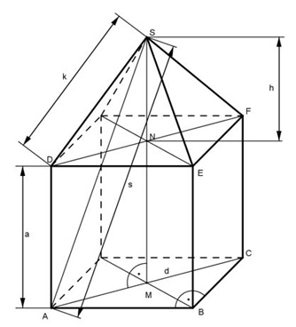

Pythagoras Aufgabe 54 Einem Würfel mit der Seitenlänge a = 4 cm ist eine Pyramide aufgesetzt mit der Seitenlänge k = 3 cm. a) Berechnen Sie die Höhe h der Pyramide in cm. b) Wie weit in cm ist die linke untere Ecke des Würfels von der Spitze der Pyramide entfernt?

a) Satz von Pythagoras im Dreieck ABC: AB = BC = a d2 = a2 + a2 d2 = 42 cm2 + 42 cm2 = 32 cm2 |√ d = 5,66 cm Satz von Pythagoras im Dreieck DNS: DN = d/2 = 5,66/2 cm = 2,83 cm d d k2 = h2 + (---)2 |-(---)2 2 2 d h2 = k2 - (---)2 2 h2 = 32 cm2 - 2,832 cm2 = 0,99 cm2 |√ h = 1 cm b) Satz von Pythagoras im Dreieck AMS: AM = d/2 MS = a + h = 4 cm + 1 cm = 5 cm d s2 = (a + h)2 + (---)2 2 s2 = 52 cm2 + 2,832 cm2 = 33 cm2 |√ s = 5,7 cm